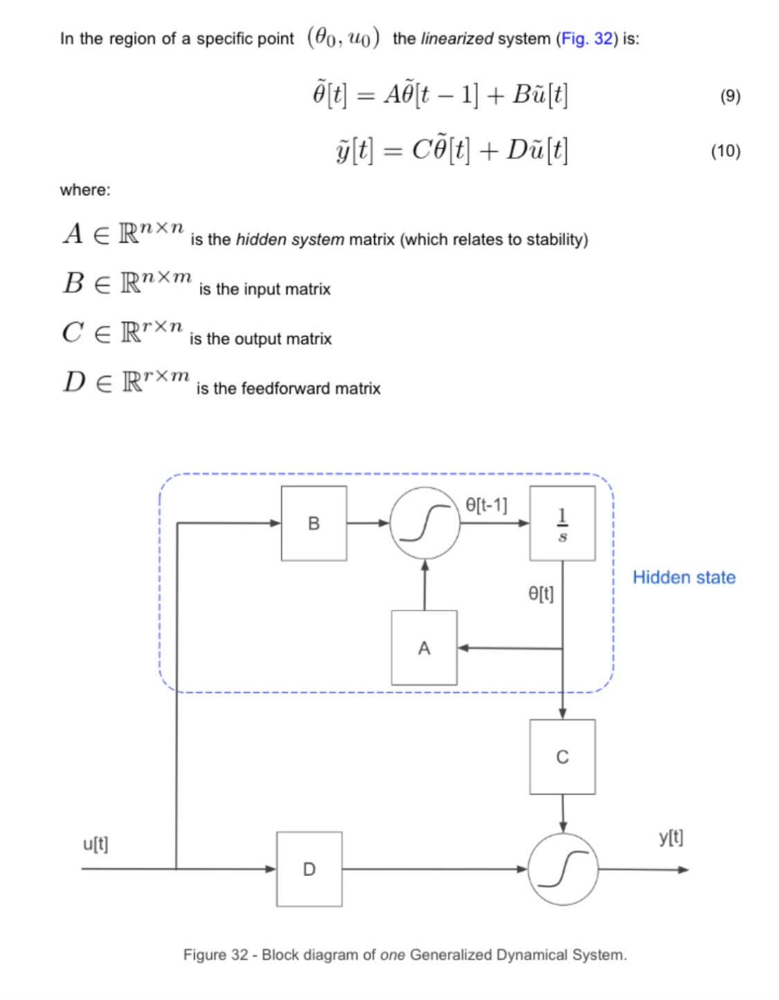
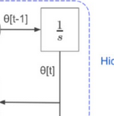
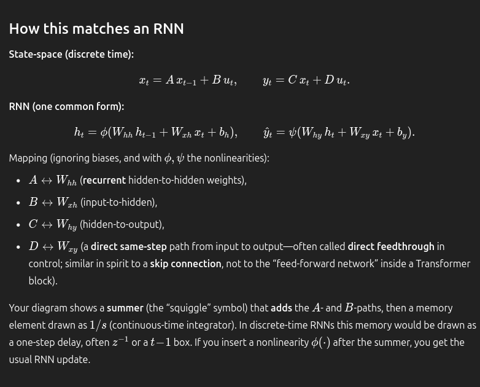
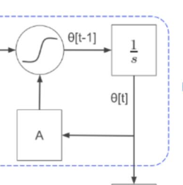
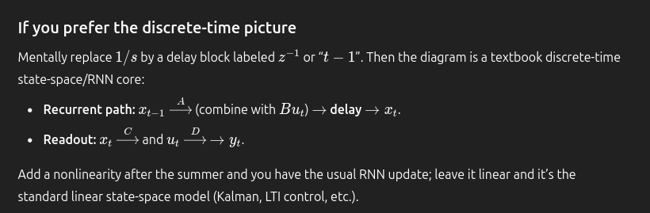
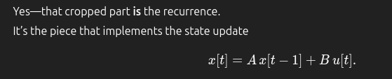
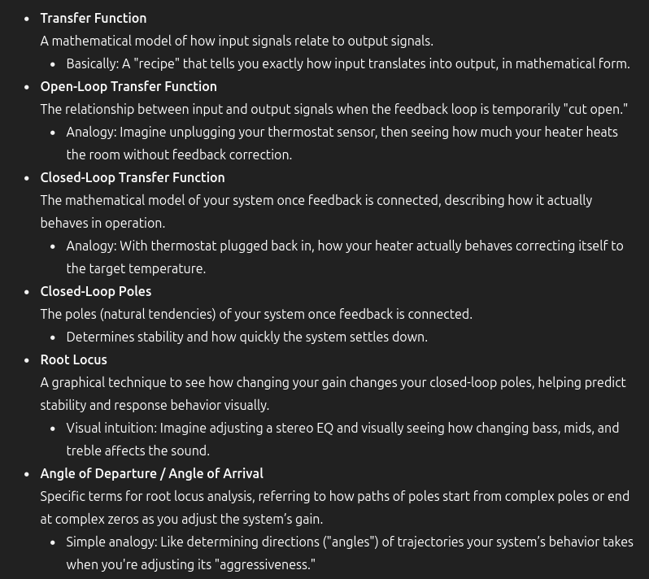

for attribution, this originally came from this youtube lecture:
- link: https://youtu.be/8T-Km3taNko?si=biUNNg1lIUDl0wWu
- title: “David Jaz Myers: A general definition of open dynamical system”
- from the Topos Institute 5 years ago.
trying to understand this
""" An open system has B, C, D matrices set to the identity matrix (so it’s like they do not even exist).
Matrix A is an undirected graph (e.g., fuzzy graph) representing a topological manifold that contains the states (coupled oscillators).
It is super generalized so it can capture the essence of every system (provided it can perform information-processing, i.e. it can be observed). """ and corresponding pic from book:

musings (2025-07-30)
15:53 - intro
- why I’m now excited: Claude named the chat I asked about this “Topological Manifold State Systems”. As I’ve just been looking at topology and am interested in how a manifold relates, this caught my eye.
- so, what is it? here’s my ramblings of figuring it out
15:55 -
- asked Chat and Claude what this was talking about (basically most of it makes no sense to me at first read, I have no clue where to grab onto this).
- first thing, this is basically a flow chart. reminds me of a circuit too. I see some sigmoids, maybe those are activation functions.
- are all matricies
- so a matrix goes into the sigmoid…ML activation function again, and the “hidden state” are clues to this. I’ve seen manifolds talked about in info geometry when representing embedding spaces
- oh and input / output matricies and a feedforward matrix. feeling somewhat confident this is talking about an ML model.
- feedforward into sigmoid activation function, it’s nice to see primitives that simply.
- (note: I looked at this stuff a couple hours ago and am now looking at it again, I feel some level of understanding the diagram now.)
- (also like the structuring of the matrices; reminds me of defining a variable with type matrix, is a feedforward matrix. . )
- ok… of the diagram I still don’t understand:
- , the theta stuff
16:10
- wait,when I put my thumb over

- I see that I understand most primitives of the diagram
- four matrices, two sigmoids, connections between some, and two basic paths that are followed.
- and then the theta and , which is interesting.
- but also! this reminds me of layers of a neural network; let’s ask chat
- holy shit: “Short answer: this diagram is a generic state-space (control) model, which you can read as the simplest possible RNN cell.” -source
- I love simpllicity. simpllist possible
- I like this answer better than Claude’s tbh: “What you’re looking at is actually the mathematical foundation that neural networks are built on:” -source
- wait, myabe not so bad though:
""" claude
- 1950s-60s: Control theorists developed state-space models (what you’re looking at)
- 1980s-90s: AI researchers added nonlinearities and learning → RNNs
- j2010s: Added attention mechanisms → Transformers jSo you’re looking at the “grandfather” of modern neural architectures! """ -source
- and what about Chat?
- “Short answer: the diagram is a state-space dynamical system, not specifically a neural-network picture. But if you add a nonlinearity, it becomes the backbone of a recurrent neural network (RNN).” -source: second answer of ‘wait, is this describing a neural network’s hidden layers?’
- this is getting better and better. the transition from a system of dynamical state-space(?) to “backbone” of RNN’s by adding nonlinearity? wtf?
- source: https://chatgpt.com/c/688a8397-2d60-8329-afb1-88e9e34e3cb8

- “Mapping (ignoring biases, and with ϕ,ψ the nonlinearities):” -source yeah, the equations for state-space and RNN’s would be the same: remove the biases and the nonlinearies, the bottom equations now becomes:
And compare that to the the equations; just different letters!
16:36
- So, adding things [the bias values and the activation functions] to this discrete time state-space model (idk if there are others) is what gives us the math equation for a common form of the RNN.
- are these claims true? I’d like to see the implementations of these as code to buy it
- “state-space models (and RNNs) are first-order Markov in the hidden state:” -source
- what’s a first-order Markov? one time step?”“first-order Markov” means the next state depends only on the current state (and the current input, if there is one), not on the whole past.” -source
16:44 - checkin…and Recurrence
- I think I’m focusing on the RNN’s a good deal, is that ok? could go either way.
- (should also head out soon…where are we at?)
- “wait and so how does this relate back to the original diagram?” — “The first-order Markov idea shows up directly in that diagram.” -source
- this is really neat
- “Inside the box you have the recurrence”, what is recurrence? just multiple states?

- “Yes! That’s exactly the part showing recurrence.” -source
- wow. that’s crazy. I love simplicity.
## The Recurrence Loop (Follow the Arrows):
1. **Start at θ[t]** (the output of the 1/s box) ↓
2. **Flow down** to the A box ↓
3. **A multiplies it** (creates Aθ[t]) ↓
4. **Flow left** to the circle (summing junction) ↓
5. **Get added** with Bu[t] at the circle ↓
6. **This sum becomes the NEW θ[t+1]** ↓
7. **Goes into 1/s box** (which delays/stores it) ↓
8. **Next time step:** It comes out as θ[t] and repeats from step 1!16:58 -
- wow. this is really cool.
- I have to go, but then there’s this:
- source: https://chatgpt.com/c/688a8397-2d60-8329-afb1-88e9e34e3cb8

17:14
- etym of current:
(another Q or two)
- how do the manifolds come in here?
- and Chat says this equation == the cropped diagram ( and 1/s)

- oh shit, and flowcharts as state-space models. connecting that back. there’s a lot goingon heere.
(2025-08-04) recurrence comes to control
- posted back and got a link to this: https://www.aerostudents.com/courses/aerospace-systems-and-control-theory/ControlSystemsEngineeringCH8.pdf
- let’s see the damage.
13:50 - root locus techniques
- first, “This is how robotics works at the firmware/PCB level.” interesting, there’s some similarity the RNN’s and robots work on a very, very low level. neat.
- “A root locus is a classical control‑systems technique that graphically shows how the closed‑loop poles (i.e. the roots of the characteristic equation) move in the complex s‑plane as a feedback gain KK is varied from zero to infinity” -source
- or, “a root locus is control-systems tech that shows how closed-loop poles [what?] move in the complex s-plane as a feedback gain is varied from zero to inf”. that kinda makes more sense
- “Root locus…is a powerful method of analysis and design for stability and transient response” -source
- stability and transient response.
- “A root locus is a graph that shows how the behavior of a feedback control system changes when you adjust a gain (a knob that makes the system react more or less strongly).” -source
- feedback control system - haven
(2025-08-06) trying again
14:14 -
- “A security camera system similar to that shown in Figure 8.4(a) can automatically follow a subject. The tracking system monitors pixel changes and positions the camera to center the changes.” -source
- I’m curious how control systems relate to RNN’s. A camera is maintaining some sort of state (?) and so how does that relate to what a camera’s doing?
- “The root locus technique can be used to analyze and design the effect of loop gain upon the system’s transient response and stability” -source
- I feel like this is all the keywords that are super important here.
- “Also, as we increase the gain, the damping ratio diminishes, and the percent overshoot increases. The damped frequency of oscillation”; rmo springs. I wonder how that interacts with RNN’s.
14:38 - feedforward path and feedback
+ ┌─────────┐ ┌───────────┐
r ───→( + )───[ C(s) ]───[ P(s) ]───→ y
↑ │
│ ↓
└───────────[ – ]◄──────┘
- The feedforward path: here, the error gooes into C(s) (the controller), then into P(s) (the plant, the thing you want to control) and then eventually outputs y. that line is the feedforward path.
- feedback takes the output of and then pumps it back into the minus sign of the summing junction.
- had an idea, summing of things rmo audio engineering.
- “The root locus empowers us with qualitative and quantitative information about the stability and transient response of feedback control systems.” -source
14:44 - transients
- “Everything from the instant you make that command until it more-or-less stays put again is the transient response. Once it’s settled (maybe with a tiny steady-state error), you’re in the steady-state regime.” -source
- neat, similar to audio
- “Transfer Function: A mathematical model of how input signals relate to output signals.” -source

- these are really good terms. I actually feel like I understand wtf they’re talking about.
- “Control theory is fundamentally just describing and managing the gap between what you want and what you actually get, using feedback and math to shape how systems respond.” -source